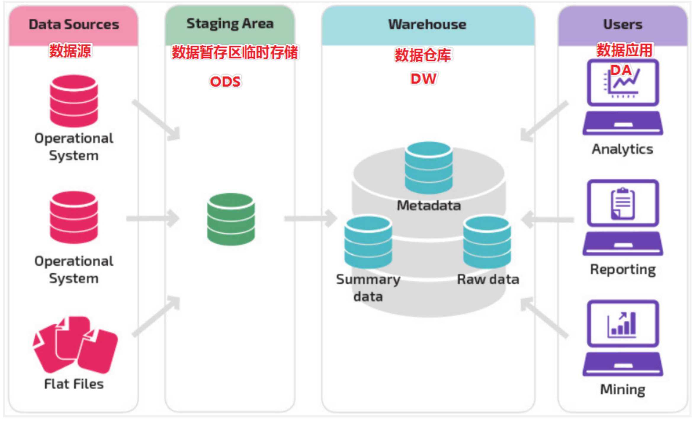
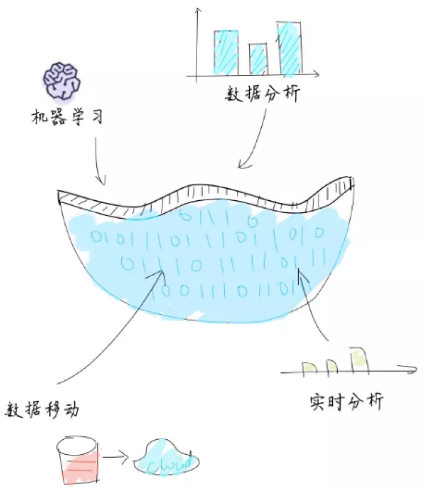
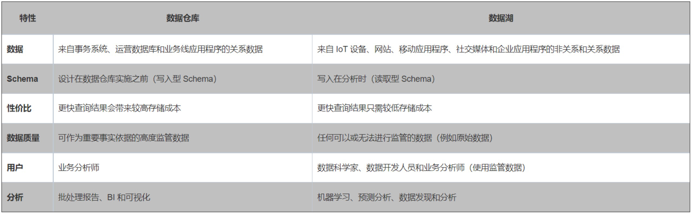
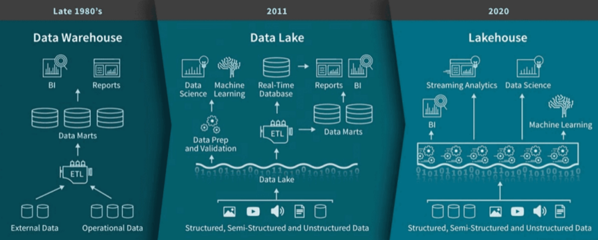

数据湖的定义
Wikipedia是这样定义的:
数据湖是一类存储数据自然/原始格式的系统或存储，通常是对象块或者文件。数据湖通常是企业中全量数据的单一存储 。全量数据包括原始系统所产生的原始数据拷贝以及为了各类任务而产生的转换数据，各类任务包括报表、可视化、高级分析和机器学习。数据湖中包括来自于关系型数据库中的结构化数据(行和列)、半结构化数据(如CSV、日志、XML、JSON)、非结构化数据(如email、 文档、PDF等)和二进制数据(如图像、音频、视频)。数据沼泽是一种退化的、缺乏管理的数据湖，数据沼泽对于用户来说要么是不可访问的要么就是无法提供足够的价值。
可能看了这段定义，我们还是不清楚这个数据湖到底是什么东西，我们可以通过对比数据仓库来进一步的解释，要注意数据湖依然是一个概念，需要具体的技术来实现，当然越是概念的东西，越容易让人感到模糊。
数据仓库VS数据湖
数据仓库
数据仓库 是一个用于存储、分析、报告的数据系统。
数据仓库的目的是构建面向分析的集成化数据环境，分析结果为企业提供决策支持
数据仓库的特点是本身不生产数据，也不最终消费数据
每个企业根据自己的业务需求可以分成不同的层次。但是最基础的分层思想，理论上分为三个层：操作型数据层（ ODS）、数据仓库层(DW)和数据应用层(DA)。

数据湖
- 数据湖（Data Lake）和数据库、数据仓库一样，都是数据存储的设计模式，现在企业的数据仓库都会通过分层的方式将数据存储在文件夹、文件中。
- 数据湖是一个集中式数据存储库，用来存储大量的原始数据，使用平面架构来存储数据。
- 数据湖越来越多的用于描述任何的大型数据池，数据都是以原始数据方式存储，知道需要查询应用数据的时候才会开始分析数据需求和应用架构。
通俗的解释，数据湖就是用来存原始数据的一个文件系统，其实也是为了弥补数仓的缺陷，数仓是分层的，是一个纵向的，需要对原始数据进行一系列处理才能使用，而且只能处理格式化数据。而对于机器学习，数据分析这类技术，更多的使用原始数据，可能不需进数仓，随着机器学习，数据挖掘的火爆，就越来越需要这样一个对原始数据进行存放，组织的地方，数据湖技术因此诞生。

数据仓库与数据湖的比较

通过对比，数据仓库和数据湖面向的主体不一样，也有各自的优劣。所以又提出了“湖仓一体”的概念，下文我们进行解释。
数据湖的演进

通过上图，我们可以较清晰的看到，从数仓到湖仓一体整个发展过程，已经起的作用。而现在大火的湖仓一体的概念，其实离不开 数据仓库本身的发展，此时湖仓一体中的”仓“ 指的就是真正的实时数仓，也就是图中的Streaming Analytics 。
总结
- 数据湖本质上就是一个数据存储，利用hdfs 通过简单的规划组织，就成为了一个数据湖。而湖仓一体概念，面向的群众就不止是大数据，包括算法、数据分析人员。
- 数据湖技术在大数据领域中，可以用来解决 “流批一体”中的存储问题。

...
...
This is copyright.